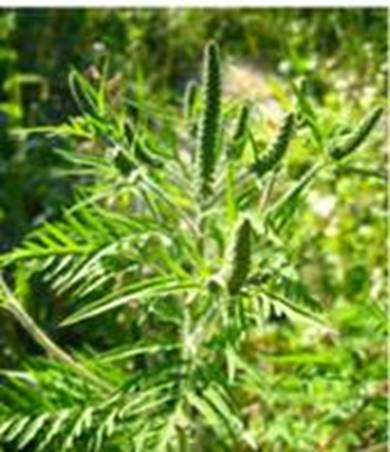

У многих растений распространяются не сами семена, а плоды. Эффективное распространение семян – залог выживания вида растения. Оно может происходить с помощью воды, животных, ветра, самораспространения.
Наблюдение: распространение семян
Понаблюдайте за распространением семян и плодов растений, растущих около вашего дома. Постарайтесь найти хотя бы по одному примеру для всех способов распространения. Приведите примеры растений, распространяющих семена подобным же образом.
Анемохория – распространение семян и плодов ветром.
Семена ивы, тополя, осины (см. Рис. 1) покрыты белым пухом и распространяются ветром на большие расстояния. Так же распространяются семена одуванчиков и ковыля.
Рис. 1. Семена ивы
Ветром могут распространяться только легкие сухие плоды. Для захвата ветра плоды имеют выросты, это плоды березы, ясеня, клена (см. Рис. 2). Сильный ветер может их сорвать с дерева только после полного опадания листьев, и так распространить.
Рис. 2. Плод клена
Плоды липы имеют характерные парусовидные листики (см. Рис. 3), что способствует их подхватыванию сильным ветром. Они, вращаясь, способны улетать от дерева на большие расстояния.
Рис. 3. Парусовидные листья плода липы
Гидрохория – распространение семян и плодов растения водой.
Анемогеохория
Некоторые степные растения образуют ветвистый, тонкий у основания стебель, который осенью, по мере созревания плодов, отмирает. Ветер отламывает растение у корня и перекатывает его. Такие растения называют перекатиполе. Примеры растений: качим, кермек.
Анемогеохория – способ распространения семян перекатыванием всего растения по земле ветром.
Плоды ольхи (см. Рис. 4), попадая в воду, не тонут и разносятся течением на мелкие расстояния.
Рис. 4. Плоды ольхи
Плоды кокосовой пальмы морскими течениями переносятся с одного острова на другой. Такие плоды устойчивы к соленой воде. Так, плоды сейшельской пальмы не тонут в воде, но гибнут в морской воде.
Автохория – распространение семян растений саморазбрасыванием (см. Рис. 5). Так, при задевании плода растения недотрога его створки резко скручиваются, разбрасывая семена. Это характерно для гороха, фасоли, других бобовых. Семена разбрасываются на не очень большое расстояние.
Рис. 5. Автохория фиалки
Зоохория – распространение семян и плодов растений с помощью животных.
Бешеный огурец
На сухих склонах и морских побережьях можно встретить сорное растение бешеный огурец. После созревания семян в его плодах скапливается слизь, которая вместе с семенами может выстреливаться из плода. Такие семена могут прилипнуть к человеку или животному, задевшему плод.
Плоды лопуха (см. Рис. 6) или череды снабжены острыми зубчиками или крючками. С их помощью плоды прицепляются к шерсти животных или одежде людей, которые разносят их на большие расстояния.
Рис. 6. Плоды лопуха
Сочные плоды брусники (см. Рис. 7), черники, бузины и др. поедаются животными, в основном, птицами. Их семена защищены твердой оболочкой и не перевариваются. Поэтому выбрасываются вместе с пометом.
Орнитохория – распространение семян птицами.
Рис. 7. Плоды брусники
Желуди, каштаны (см. Рис. 8) падают прямо под родительское растение. Как правило, такие плоды питательные, и многие животные делают из них запасы корма на зиму. Часто животное гибнет или не способно найти спрятанные запасы. В этом случае растение прорастает.
Рис. 8. Плод каштана
Антропохория – распространение семян растений с помощью человека.
При перевозке различных грузов семена и плоды растений могут прилипнуть к тюкам или мешкам. При их разгрузке семена могут отпадать и прорастать. Также семена могут прилипать к транспорту.
Перенос семян может происходить между континентами. Так, из Европы в Америку был завезен подорожник. Из Америки в Европу были завезены амброзия (см. Рис. 9) и ромашка пахучая.

Рис. 9. Амброзия
У одного вида растений могут сочетаться различные виды распространения плодов и семян. Так, семена фиалки, помимо саморазбрасывания, распространяются муравьями (имеют питательные придатки, привлекающие муравьев).
Плоды вяза распространяются ветром и водой.
Мирмекохория – распространение семян муравьями.
Список литературы
1. Биология. Бактерии, грибы, растения. 6 кл.: учеб. для общеобразоват. учреждений / В.В. Пасечник. – 14-е изд., стереотип. – М.: Дрофа, 2011. – 304 с.: ил.
2. Тихонова Е.Т., Романова Н.И. Биология, 6. – М.: Русское слово.
3. Исаева Т.А., Романова Н.И. Биология, 6. – М.: Русское слово.
Дополнительные рекомендованные ссылки на ресурсы сети Интернет
1. Biolicey2vrn.ucoz.ru (Источник).
2. Cosmoschool.ru (Источник).
3. School.xvatit.com (Источник).
Домашнее задание
1. Биология. Бактерии, грибы, растения. 6 кл.: учеб. для общеобразоват. учреждений / В.В. Пасечник. – 14-е изд., стереотип. – М.: Дрофа, 2011. – 304 с.: ил. – с. 151, задания и вопросы 1, 5 (Источник).
2. Какие приспособления имеют семена для распространения ветром?
3. Что такое зоохория? Для каких растений она характерна?
4. * Существует ли наиболее выгодный способ распространения семян? Какой? Аргументируйте как отрицательный, так и положительный ответы.